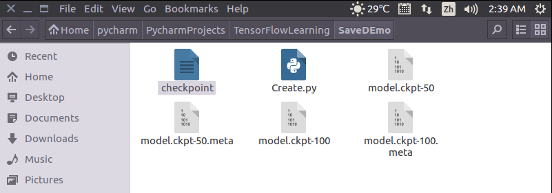

Saver的用法
Saver的背景介绍
- Saver类提供了向checkpoints文件保存和从checkpoints文件中恢复变量的相关方法。Checkpoints文件是一个二进制文件，它把变量名映射到对应的tensor值 。
- 只要提供一个计数器，当计数器触发时，Saver类可以自动的生成checkpoint文件。这让我们可以在训练过程中保存多个中间结果。例如，我们可以保存每一步训练的结果。
- 为了避免填满整个磁盘，Saver可以自动的管理Checkpoints文件。例如，我们可以指定保存最近的N个Checkpoints文件。
Saver的实例
import tensorflow as tf
import numpy as np
x = tf.placeholder(tf.float32, shape=[None, 1])
y = 4 * x + 4
w = tf.Variable(tf.random_normal([1], -1, 1))
b = tf.Variable(tf.zeros([1]))
y_predict = w * x + b
loss = tf.reduce_mean(tf.square(y - y_predict))
optimizer = tf.train.GradientDescentOptimizer(0.5)
train = optimizer.minimize(loss)
isTrain = False
train_steps = 100
checkpoint_steps = 50
checkpoint_dir = ''
saver = tf.train.Saver() # defaults to saving all variables - in this case w and b
x_data = np.reshape(np.random.rand(10).astype(np.float32), (10, 1))
with tf.Session() as sess:
sess.run(tf.initialize_all_variables())
if isTrain:
for i in xrange(train_steps):
sess.run(train, feed_dict={x: x_data})
if (i + 1) % checkpoint_steps == 0: # 存储的条件判断
saver.save(sess, checkpoint_dir + 'model.ckpt', global_step=i+1) # 文件名
else:
ckpt = tf.train.get_checkpoint_state(checkpoint_dir)
if ckpt and ckpt.model_checkpoint_path:
saver.restore(sess, ckpt.model_checkpoint_path)
else:
pass
print(sess.run(w))
print(sess.run(b)) # restore后可以直接打印出来
isTrain：用来区分训练阶段和测试阶段，True表示训练，False表示测试
train_steps：表示训练的次数，例子中使用100
checkpoint_steps：表示训练多少次保存一下checkpoints，例子中使用50
checkpoint_dir：表示checkpoints文件的保存路径，例子中使用当前路径
训练阶段
使用Saver.save()方法保存模型：
- sess：表示当前会话，当前会话记录了当前的变量值
- checkpoint_dir + 'model.ckpt'：表示存储的文件名
- global_step：表示当前是第几步
训练完成后，当前目录底下会多出5个文件。

测试阶段
测试阶段使用saver.restore()方法恢复变量：
- sess：表示当前会话，之前保存的结果将被加载入这个会话
- ckpt.model_checkpoint_path：表示模型存储的位置，不需要提供模型的名字，它会去查看checkpoint文件，看看最新的是谁，叫做什么。
运行结果如下图所示，加载了之前训练的参数w和b的结果
TensorBoard
创建一个事件
writer = tf.summary.FileWriter('./graphs, sess.graph) # route to keep your event files
Go to terminal, run:
> python [yourprogram].py
> tensorboard --logdir=./graphs --port 6006
Then open your browser and go to : http://localhost:6006/
注意：路径名不需用引号来表示
注意二： 命令行中的路径和代码中的路径是一致的
Explicitly name them
a = tf.constant(2, name="a")
b = tf.constant(3, name="b")
x = tf.add(a, b, name = "add")
tf.constant and tf.Variable
tf.placeholder and feed_dict
List of optimizers in TF
- tf.train.GradientDescentOptimizer
- tf.train.AdagradOptimizer
- tf.train.MomentumOptimizer
- tf.train.AdamOptimizer
- tf.train.ProximalGradientDescentOptimizer
- tf.train.ProximalAdagradOptimizer
- tf.train.PMSPropOptimizer
Huber loss
def huber_loss(labels, predictions, delta=1.0):
residual = tf.abs(predictions - labels)
condition = tf.less(residual, delta)
small_res = 0.5 * tf.square(residual)
large_res = delta * residual -0.5 * tf.square(delta)
return tf.select(condition, small_res, large_res)

TRAIN

with tf.Session as sess:
# to visualize using tensorboard
writer = tf.summary.FileWriter('./graphs/logistic_reg',sess.graph)
start_time = time.time()
sess.run(tf.global_variables_initializer())
n_batches = int(mnist.train.num_examples/bathc_size)
for i in range(n_epochs): # train the model n_epochs times
total_loss = 0
for _ in range(n_batches): # n_batches 和 batch_size 组合会遍历55000个数据
X_batch, Y_batch = mnist.train.next_batch(batch_size)
# 一个batch才会进行一次方向传播迭代
_, loss_batch =sess.run([optimizer, loss], feed_dict={X:X_batch, Y:Y_batch})
total_loss += loss_batch
print('Average loss epoch {0}: {1}'.format(i, total_loss/n_batches))
print('Total time: {0} seconds'.format(time.time() - start_time))
print('Optimization Finished!')
TEST
#test the model
preds = tf.nn.softmax(logits)
correct_preds = tf.equal(tf.argmax(preds, 1), tf.argmax(Y, 1)) # 两个向量中equal的项
accuracy = tf.reduce_sum(tf.cast(correct_preds, tf.float32))
n_batches = int(mnist.test.num_examples/bathc_size)
total_correct_preds = 0
for i in range(n_batches):
X_batch, Y_batch = mnist.test.next_batch(batch_size) # 得到test 数据集
accuracy_batch = sess.run([accuracy], feed_dict={X:X_batch, Y:Y_batch})
total_correct_preds += accuracy_batch
print('Accuracy {0}'.format(total_correct_preds/mnist.test.num_examples))